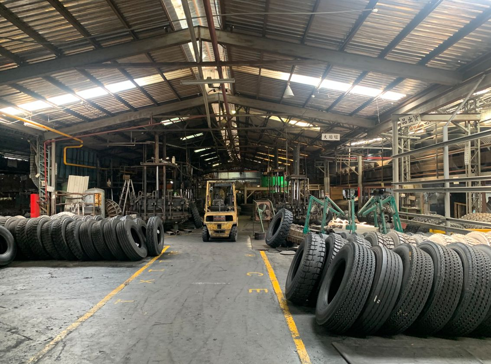
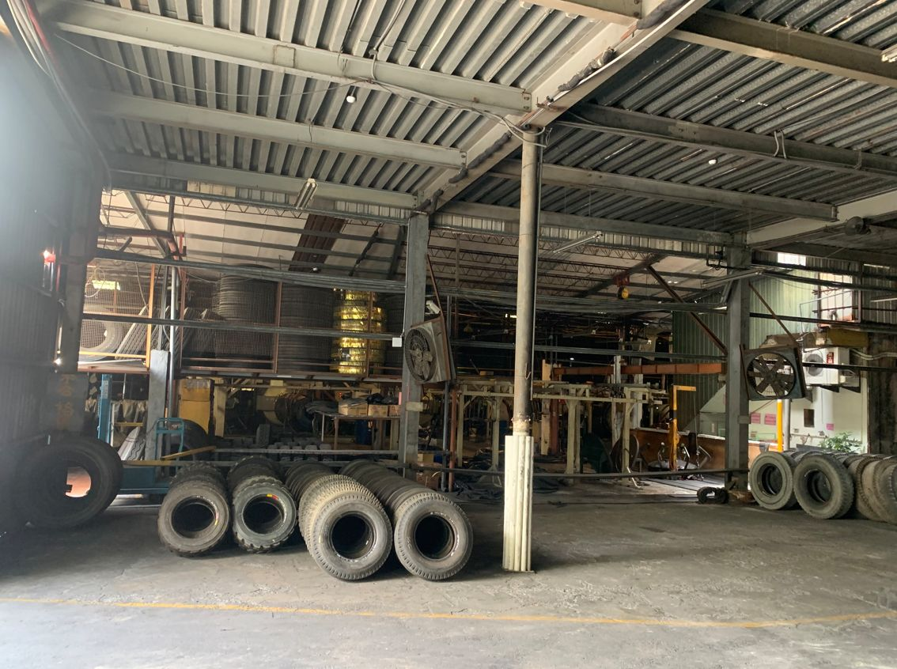
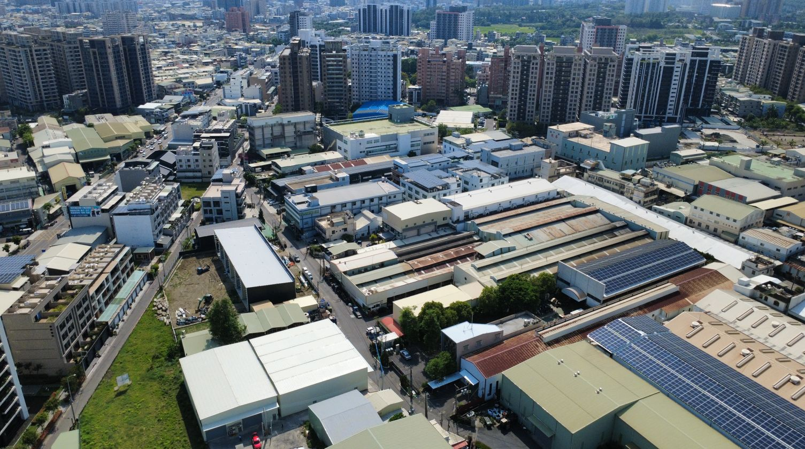

| 類別 | 大型廠房 |
|---|---|
| 編號 | IND-012 |
| 區域 | 高雄市鳳山區鎮北北巷 |
| 價格 | 約7.86億元 (35萬/地坪)；租金145萬/月(未稅)，645元/坪 |
| 使用分區 | 乙種工業區(70%/210%) |
| 土地坪數 | 2246.97 |
| 建物坪數 | 676.55 |
| 備註 | 面寬約54米；深約137米；臨路：鎮北北巷(8米)；可分2單位租與售(面寬約32米-1328地坪；面寬約22米-918地坪) |
洽詢：楊紘珉（富住通商用不動產 新興店）0905-858-141｜LINE 諮詢
相關物件：鳳山區廠房、乙種工業區、大型廠房・千坪工業地、廠房出租